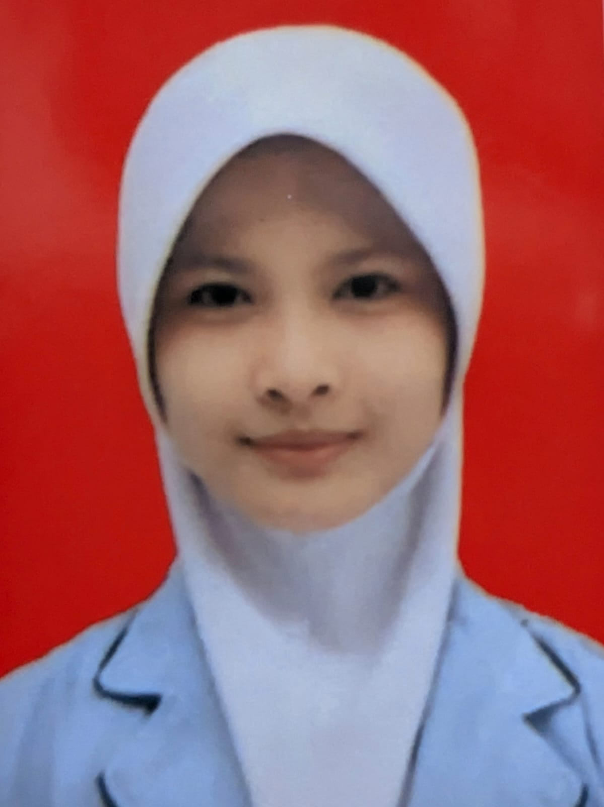
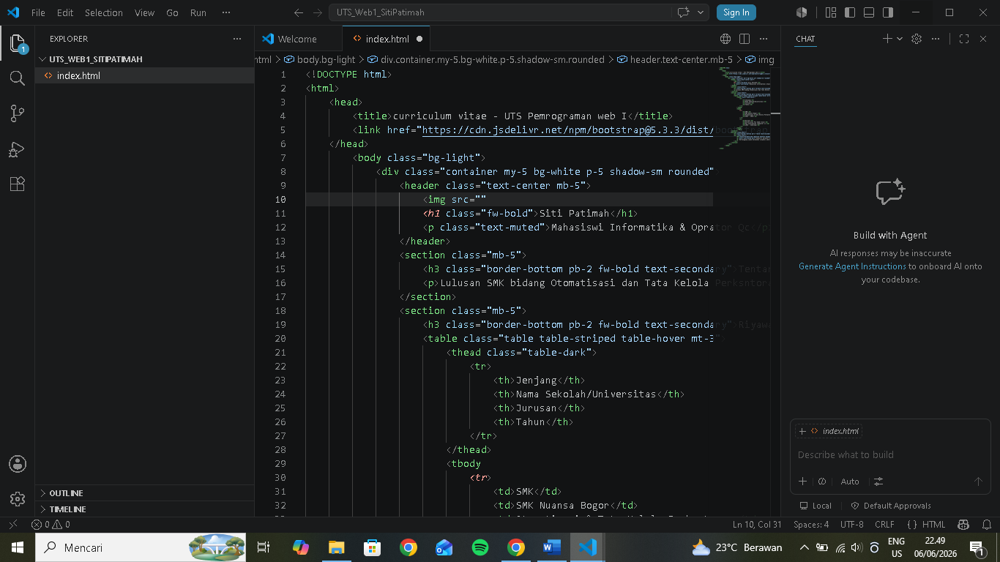

Mahasiswi Informatika & Operator Qc
| Nomor HP/WA | |
|---|---|
| 089608712739 | SITIP6804@GMAIL.COM |
Saya merupakan mahasiswi program studi informatika yang saat ini sedang aktif membagi waktu antara menuntut ilmu dan bekerja secara perfesional di industri manufaktur yang adaptif, teliti, sebagai Quality Control Inspector (OQC).
memiliki keterampilan yang kuat dalam manajemen kearsipan, pengoperasian microsoft Office, serta pengawasan mutu produk sesuai standar operasional. Terbiasa bekerja dengan target, fokus pada detail, dan memiliki motivasi tinggi untuk terus mengembangkan diri di dunia profesional
Hobi Saya
Bahasa yang dikuasai
| Jenjang | Nama Sekolah/Universitas | Jurusan | Tahun |
|---|---|---|---|
| SMK | SMK Nuansa Bogor | Otomatisasi & Tata Kelola Perkantoran | 2022 - 2025 |
| Kuliah | Universitas PJJ Siber Asia | PJJ Informatika (Semester 1) | 2026 - Sekarang |
Industri Garment| 2025- Sekarang
Bertanggung jawab melakukan inspeksi akhir pada pakaian jadi (apparel) untuk memastikan kualitas pada produk sesuai dengan standar yang telah diberikan sebelum dikirim ke buyer